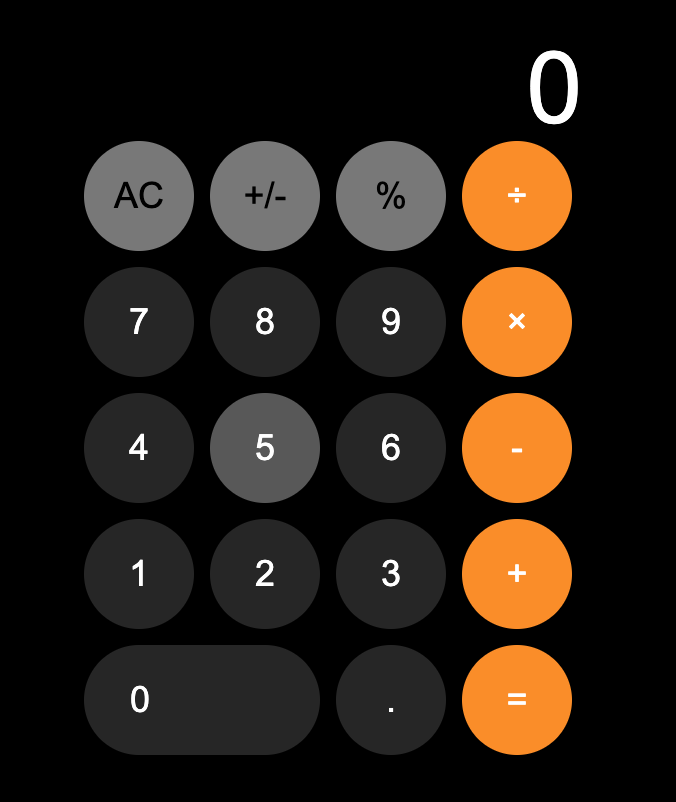
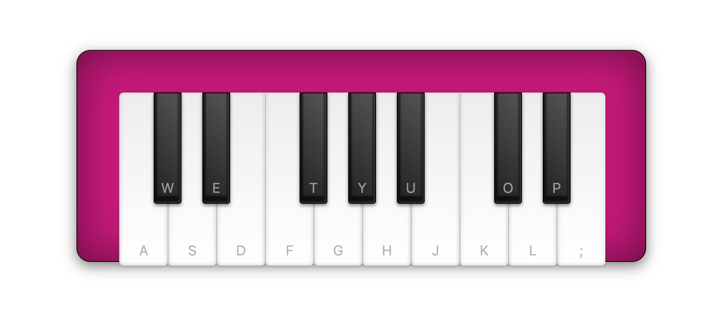
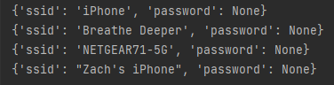
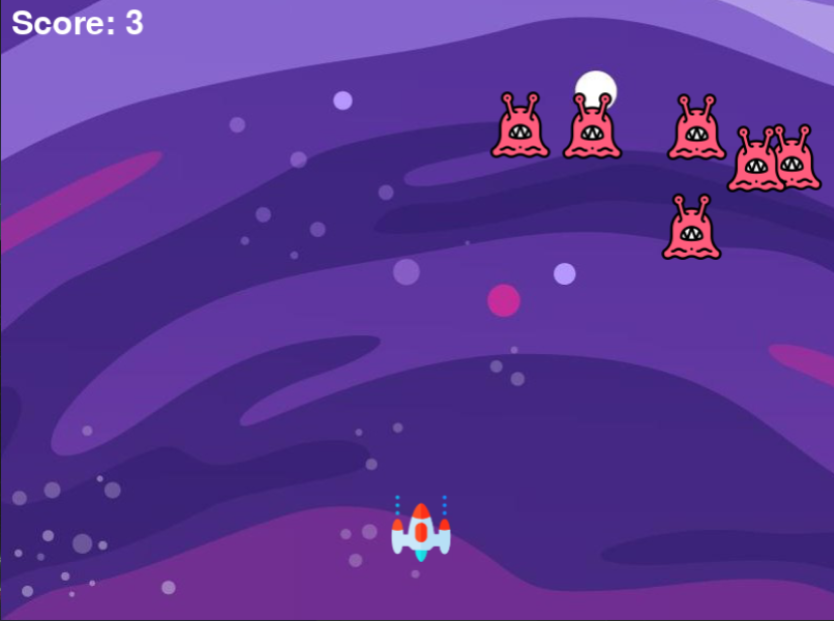
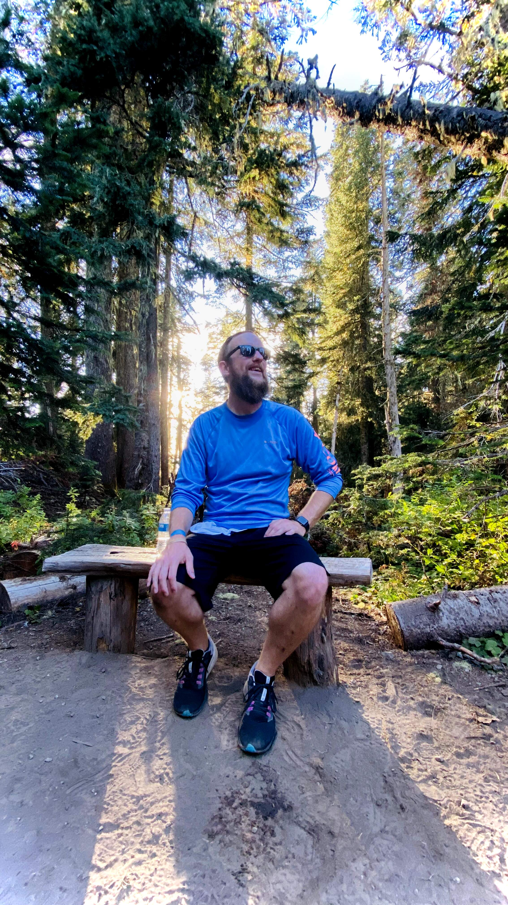

Intro

I am a recent graduate with an AAS in Programming from Volunteer State Community College in Gallatin, TN. I have experience in Python, C++, C#, ASP.net, JAVA, SQL, and others. You can check out some of my projects and work experience here.
I have a passion for all things technology and programming, as reflected in my body of work so far. I enjoy learning what makes things work and have a deep interest in using existing tools in new and unique ways.
Work
A collection of some of my projects througout my time programming.

A Javascript based calculator I built to challenge my knowledge of event listening
and to get some extra CSS practice. Modeled to look like the iOS 16 Beta (3) calculator.
A Javascript based weather app that returns weather for location entered by user. Built as an introduction to working with APIs
as well as webpack. In addition to weather functionality, the script also returns a new background image based on the location
entered by the user.

An in-broswer synth that can be played using your keyboard on desktop, or simply tapped in landscape mode on mobile devices. A project
built to challenge my knowledge of HTML/CSS as well as Javascript.
A Pygame-built version of Flappy Bird that utilizes the NEAT algorithm to train birds to not hit pipes in the game.

A little utility that can show the wifi addresses and passwords for the device it runs on.

A Space Invaders-like game built using pygame. Built as an entry point to programming small games in python.
Work Experience

STORE MANAGER – Batteries Plus Bulbs / Cookeville, TN – March 2017 – March 2022
- Maintain store operations in this specialized retail environment including mobile device repair
- Adapt to a constantly evolving business as customer needs change
- Promoted sales growth by seeking opportunities in other product categories leading to consistent 7-10% growth year over year accumulating nearly $750,000 in sales from $500,00 in 2017
- Provide consistent outstanding customer service
INTERENET SALES SPECIALIST – Nissan / Cookeville, TN – September 2016 – March 2017
- Responsible for maintaining internet leads for potential sales utilizing a CRM (Salesforce)
- Greet and assist customers not actively working with another salesperson
- Work deals with potential clients by providing product information, scheduling demonstrations of his or her selected vehicle, and ultimately closing a sale
- Averaged 8-12 units sold across new and used per month
ASSISTANT STORE MANAGER / HARDLINES - Sears / Cookeville, TN – March 2011 – September 2016
- Managed a team of 30+ salespeople with sales totaling in excess of 1 million dollars
- Responsible for all deliveries local and warehouse-based, shipping and receiving as well as return to vendor processes
- Introduced mattress sales department that led the nation from each year from 2014-2016 demonstrating outstanding growth against similar sized stores across the nation generating an additional $100,00+ in sales
- Troubleshoot IT issues including server hardware, POS, networking
ASSISTANT MANAGER – Fox’s Pizza Den / Kingsport, TN – September 2007 – December 2011
- In charge of front-of-house personnel including scheduling, maintaining an acceptable labor cost and managing hours for all employees
- Ensure state and federal health code compliance by implementing best-practices
- Maintain inventory levels for all consumables including food product and other hard goods
About

My name is Zach Coombs and I am an avid rock climber and adventurer with an insatiable appetite for all things technology and programming.
Contact
Email: zachdcoombs@gmail.com
Phone: (423) 723-4602